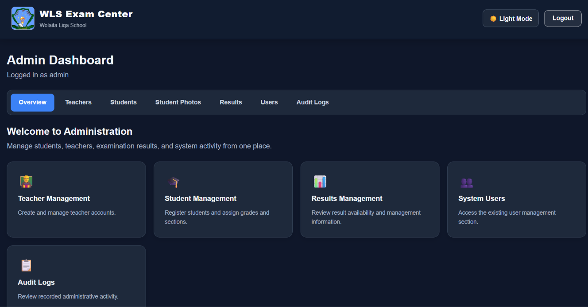
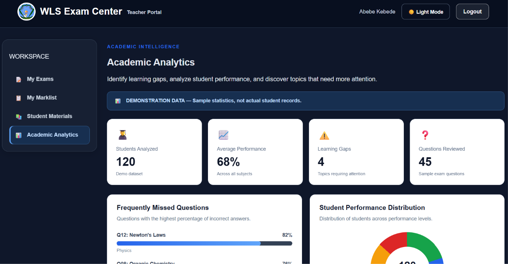
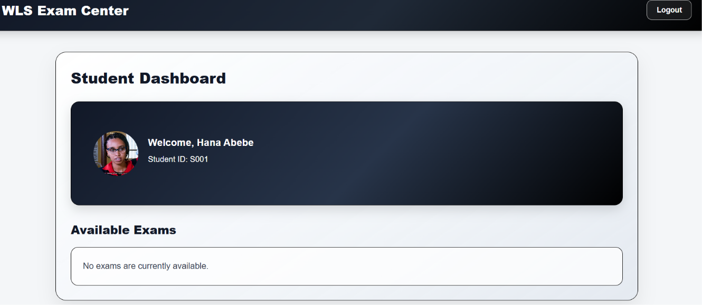
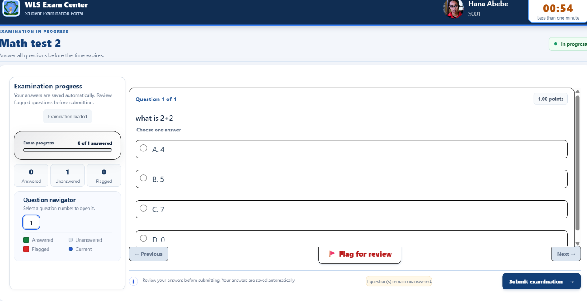
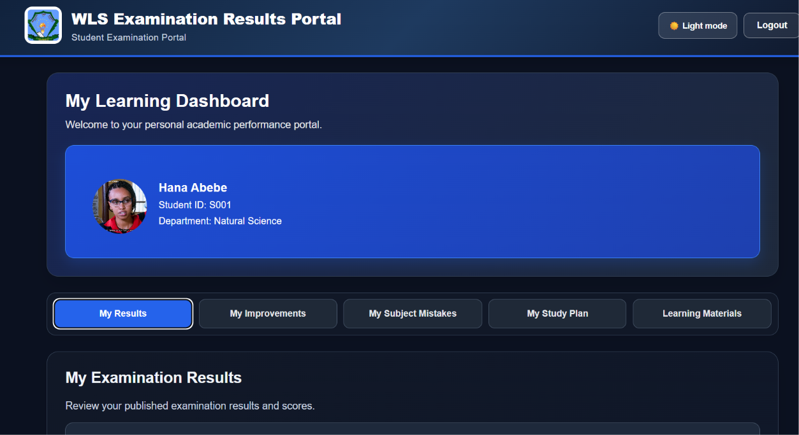
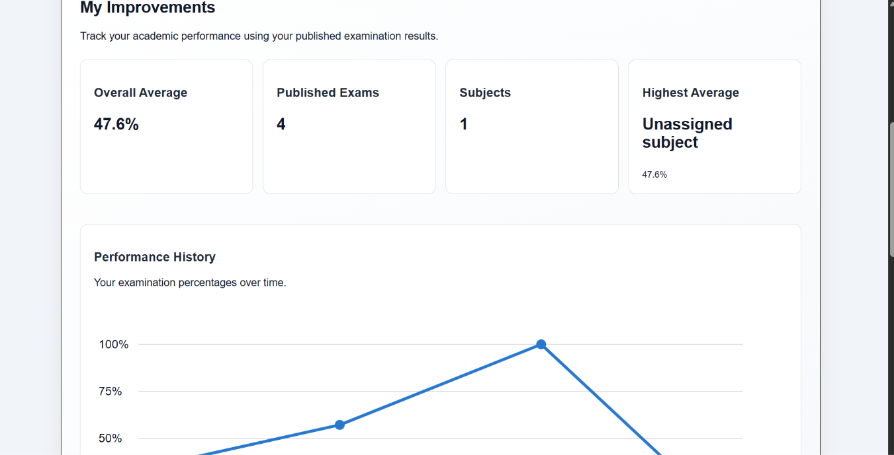
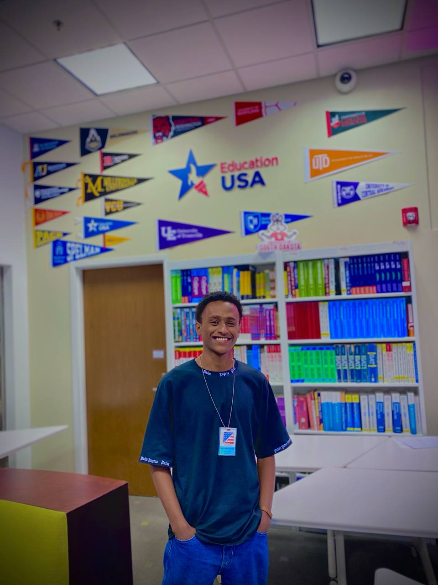
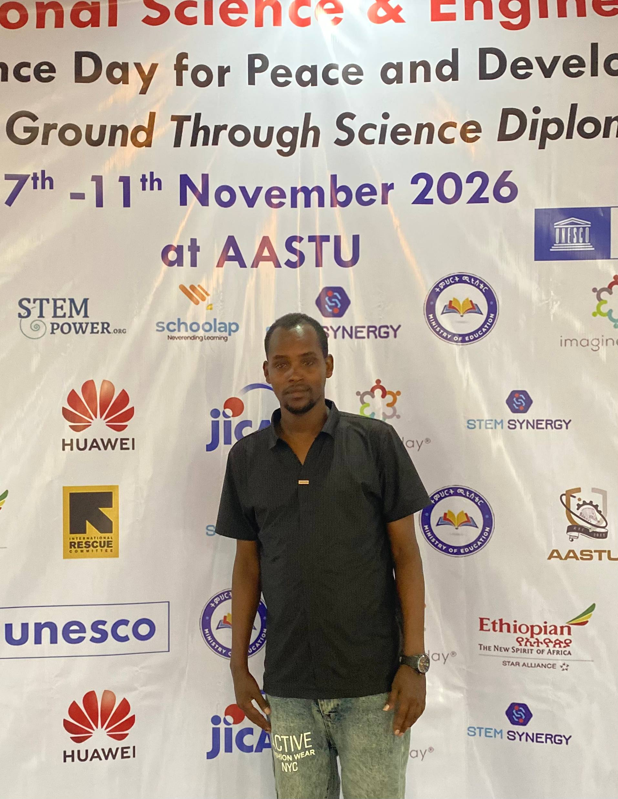

DIGITAL EDUCATION • INNOVATIVE EXAMINATIONS
Meet WLS Exam Center, a LAN-based digital examination management system designed to make school examinations more efficient, organized, and accessible.
Digital Exams. Local Connection. Wider Access.

WLS Exam Center — Administration Dashboard
Traditional paper-based examinations present several challenges for schools.
WLS Exam Center is a LAN-based digital examination management system that allows students, teachers, and administrators to manage examinations through computers connected to the same local network.
The system can operate without continuous internet connectivity.
SYSTEM OVERVIEW
WLS Exam Center connects administrators, teachers, and students through one examination management system.
Oversees the examination environment and manages the school's digital examination system.
Creates and manages examinations while monitoring student performance.
Takes examinations digitally and accesses academic results through the student portal.
WHAT THE SYSTEM OFFERS
A collection of tools designed to simplify examination management and improve the student experience.
Students take examinations through a dedicated digital interface.
Objective questions are graded automatically after submission.
Teachers can create, organize, and publish examinations.
Teachers can review student performance and identify learning gaps.
Students can access their published examination results.
Students can access learning materials provided by teachers.
BUILT WITH TECHNOLOGY
Combining modern web technologies and local networking to create a practical digital examination solution.
Structure
Design
Interactivity
Backend runtime
Web framework
Database
Local connectivity
EXPLORE THE SYSTEM
A closer look at the different interfaces and features of our examination system.
Manage users and oversee the examination system.

Create and manage examinations.

Access examinations and academic information.

Answer and submit examination questions digitally.

View published examination results.

Review academic progress and subject weaknesses.
BEYOND THE CLASSROOM
WLS Exam Center aims to make school examination processes more efficient and accessible.
Reduce reliance on printed examination papers.
Make objective grading and result management faster.
Introduce students and teachers to digital examination tools.
Explore opportunities to bring the system to more schools.
THE PEOPLE BEHIND THE PROJECT
A student-led initiative inspired by the desire to make education more accessible through technology.

Founder & Developer
Designed and developed WLS Exam Center to address challenges in school examinations.

Physics Teacher
I would like to express my sincere gratitude to my Physics teacher, Nathan Ayele, for his continuous guidance, encouragement, and support throughout my high school journey and the development of this project.
His mentorship played an important role in turning this idea into reality.
Thank you for always believing in me.
Wolaita Liqa General Secondary Boarding School